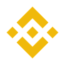

Exchange · registro ESMA a 22/10/2026 · revisado el
¿Está Binance autorizado en España?
No. Binance no figura en el registro MiCA
No hemos encontrado ninguna sociedad de Binance en el registro de proveedores autorizados de ESMA a 22/10/2026.
Ficha editorial · revisada el
Binance en España: quién presta el servicio
- Sociedad para la UE y España
- Ninguna en el registro1Ninguna sociedad de la marca figura en el registro MiCA
- Supervisor de origen
- —Sin sociedad en el registro
- Estado MiCA
- No figura en el registro MiCA1Registro de ESMA a 22/10/2026
- Listado de la CNMV
- No figura2Relación de proveedores de la CNMV del 20/10/2026
Ninguna sociedad del grupo Binance figura en el registro MiCA de ESMA ni en la relación de proveedores de la CNMV, así que no hay una entidad con autorización MiCA a la que asociar la marca.1,2
Qué comprobar si usas Binance desde España
- Si tienes cuenta, mira en los términos de uso qué sociedad te presta el servicio y búscala en el registro de ESMA y en el listado de la CNMV.3
- Desde el 1 de julio de 2026 solo pueden operar en España los proveedores autorizados. La CNMV pide a los que no lo estén un plan de migración para que los clientes puedan sacar sus criptoactivos y fondos, y recomienda a los inversores que se lo soliciten.
- Si una web o un intermediario te ofrece la marca con otro nombre, búscalo en las advertencias de la CNMV sobre entidades no autorizadas («chiringuitos»).
Advertencias de la CNMV (chiringuitos) Listado de proveedores de la CNMV
Fuentes 3
- ESMA: registro provisional MiCA (CASPS.csv) · datos del 22/10/2026
- CNMV: relación de proveedores de servicios de criptoactivos (PDF) · documento del 20/10/2026
- CNMV: Comunicado sobre el fin del periodo transitorio del Reglamento MiCA · documento del 15/06/2026
Información objetiva sobre el registro, no asesoramiento de inversión ni recomendación de ninguna plataforma. Si un dato no se ha podido comprobar en una fuente oficial o en la propia empresa, no aparece.
Preguntas frecuentes
¿Está Binance autorizado en España?
No consta. A 22/10/2026, Binance no figura en el registro de proveedores de servicios de criptoactivos autorizados de ESMA, por lo que no consta que pueda prestar servicios cripto en España bajo MiCA.
¿Es legal Binance en España?
No consta que Binance pueda prestar servicios cripto en España: a 22/10/2026 no figura con autorización MiCA vigente para España en el registro de ESMA. Para el usuario no es ilegal usarlo, porque la obligación de estar autorizado es del proveedor, pero un proveedor sin autorización para España no ofrece las protecciones de MiCA y puede tener que dejar de prestar servicio.
¿Qué es la licencia MiCA?
MiCA es el Reglamento (UE) 2023/1114. Desde el fin del periodo transitorio en España (1 de julio de 2026), para prestar servicios de criptoactivos a residentes en España hay que figurar en el registro MiCA con autorización vigente y España notificada, ya sea con autorización CASP (art. 59) o mediante notificación de una entidad financiera ya supervisada (art. 60).
¿Cómo compruebo si Binance está autorizado?
Busca el nombre jurídico de la sociedad que te presta el servicio (aparece en los términos legales de la app) en el registro MiCA de ESMA y en el listado de la CNMV, y comprueba que la autorización siga vigente y que España figure entre sus países. Este buscador lo hace por ti con datos a 22/10/2026.
¿Está Binance registrado en la CNMV?
No consta. A 22/10/2026, ninguna sociedad de Binance figura en el registro MiCA de ESMA, que recoge a todos los proveedores autorizados en la UE, también a los autorizados por la CNMV.
Más contexto en la guía MiCA para España y en la lista completa de proveedores.
Fuente del mapeo
Búsqueda en ESMA CASPS.csv sin coincidencia. Registro de ESMA a 22/10/2026, comprobado el 24/10/2026.
Comprueba otras marcas
Ver todas →Los cambios del registro, cada lunes
Altas, bajas, retiradas y quién gana o pierde el permiso para operar en España. Un correo, sin ruido.
- Gratis
- Un correo a la semana
- Baja en un clic
Se abre la página de suscripción de Beehiiv en una pestaña nueva: esta web no carga nada de Beehiiv ni recoge tu correo. Allí Beehiiv trata tu dirección como encargado del tratamiento. Más información en la política de privacidad.